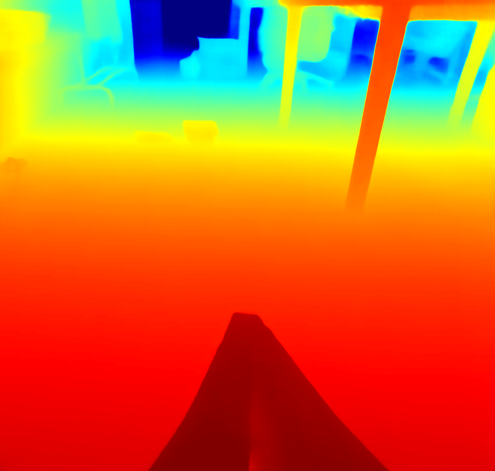
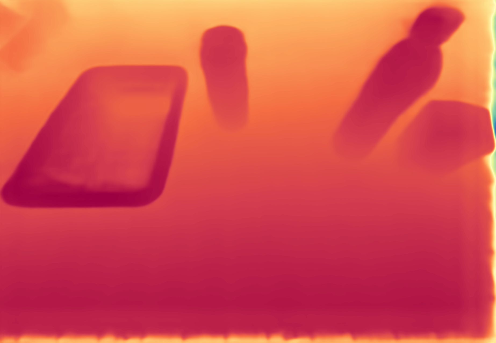
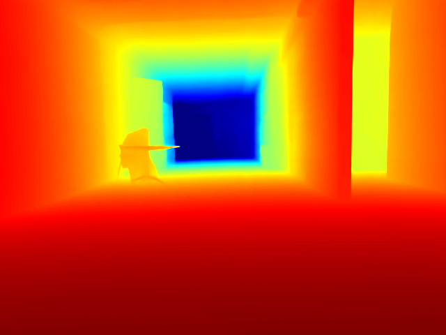
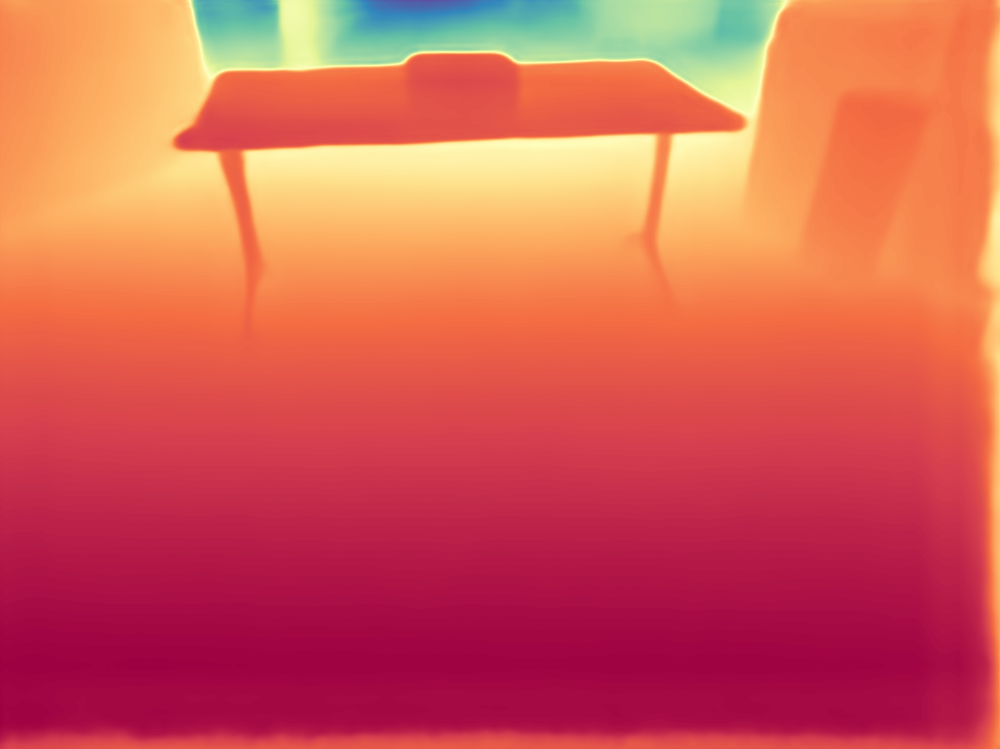
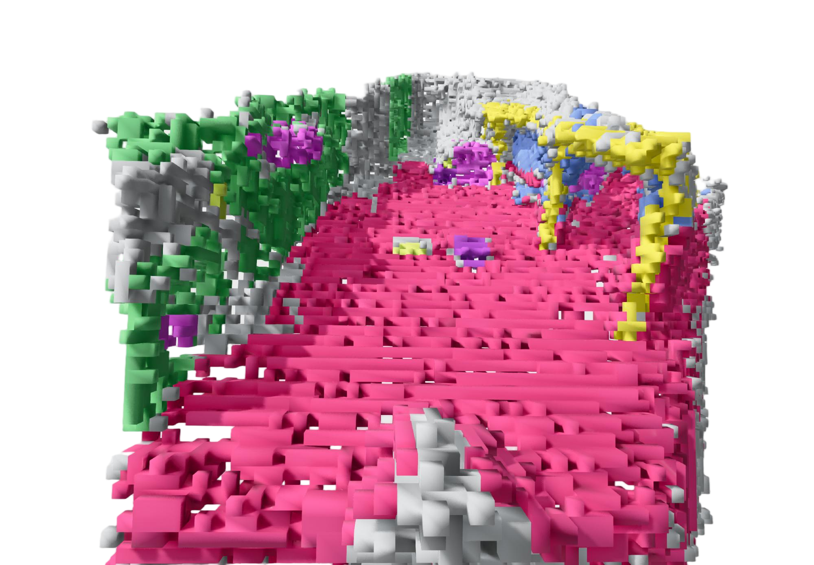
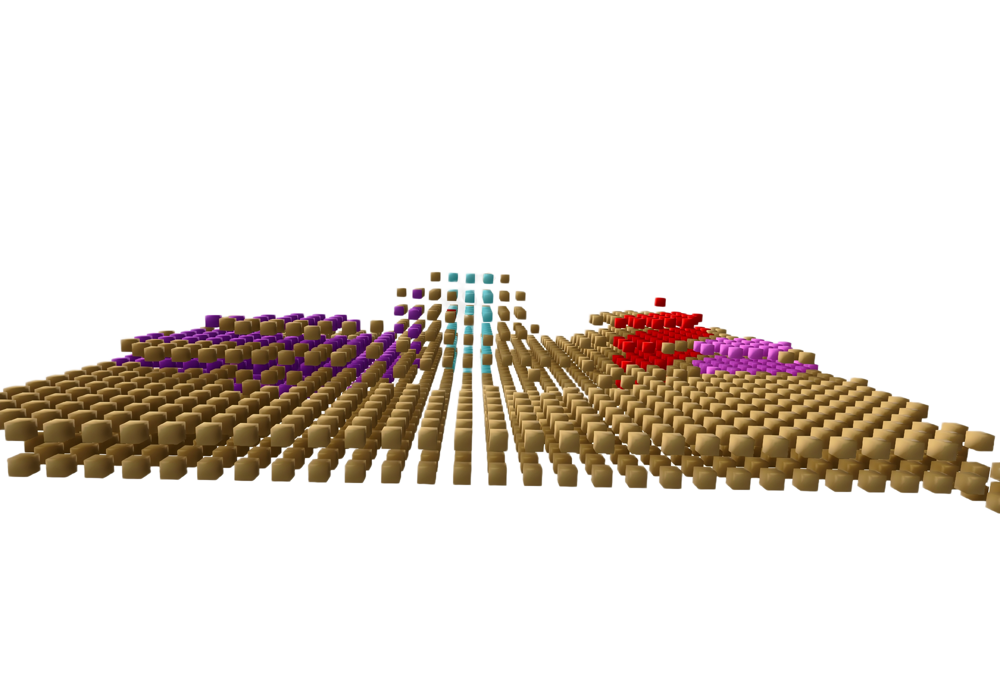
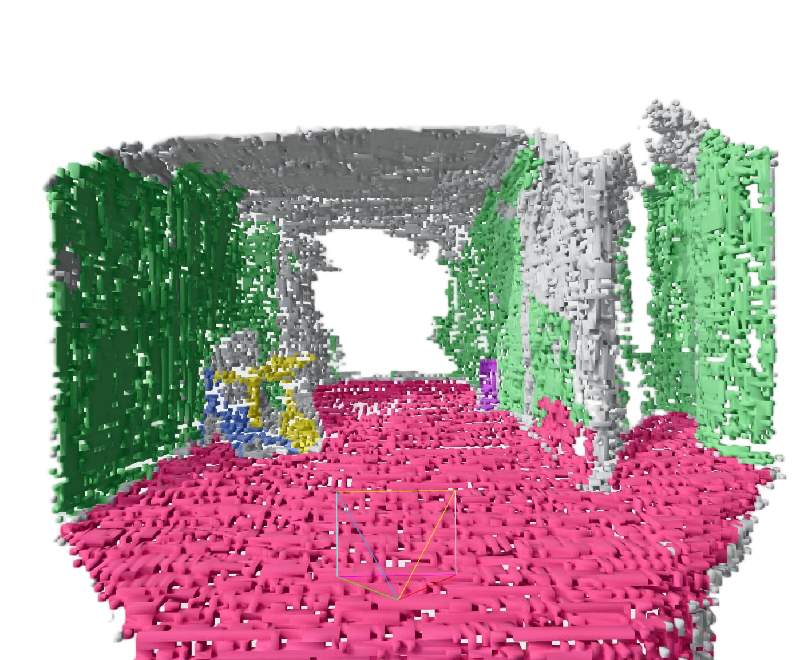
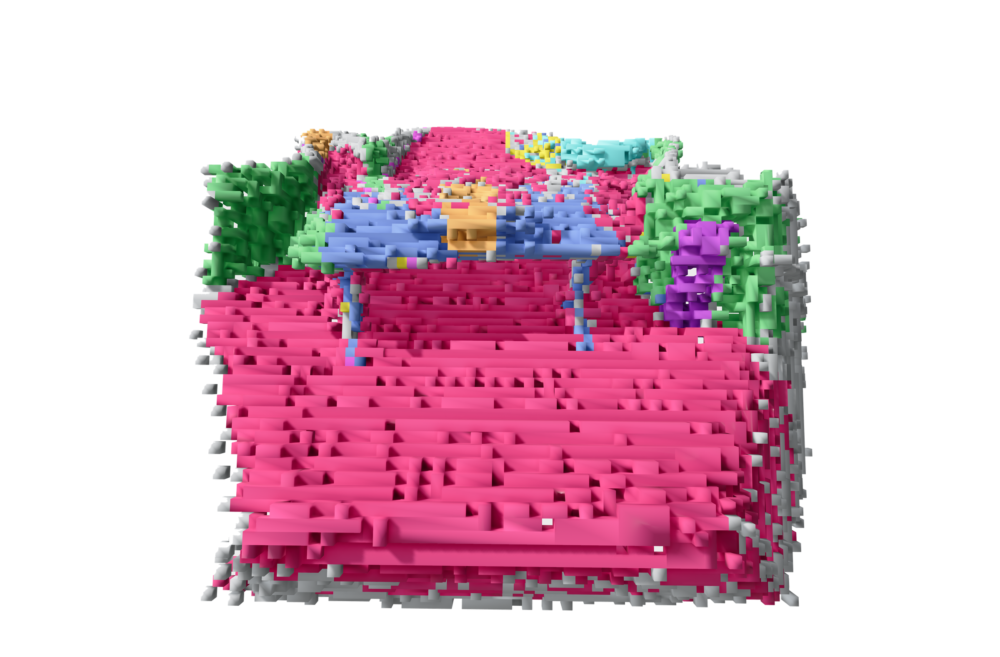

Adaptive dual-branch encoding
RGB observations provide semantic cues while optional geometric inputs are normalized into a unified point-set interface, enabling the same model to handle depth-based or LiDAR-based sensing.
A point-based adaptive 3D semantic occupancy framework for embodied scene understanding, designed to adapt across compute budgets, sensor setups, observation views, and downstream tasks.
1Beihang University 2Beijing Academy of Artificial Intelligence 3Hebei University of Technology 4XYZ Embodied AI 5ShanghaiTech University 6University of Science and Technology Beijing
Embodied tasks demand accurate, flexible, and semantically rich 3D scene representations. 3D semantic occupancy is well suited to this requirement, as it can model holistic 3D spaces by encoding geometric occupancy along with semantic categories. However, existing occupancy prediction methods struggle to meet practical deployment requirements, such as adapting to varying computing budgets, sensor setups, and observation views. In this paper, we propose a point-based Adaptive 3D Occupancy Prediction method, called AdaOcc, tailored for embodied scenarios. To accommodate heterogeneous sensor inputs, AdaOcc uses an adaptive geometry-guided dual-branch encoder that can support RGB images in various numbers of views with (estimated) depth maps or LiDAR scans. AdaOcc represents occupied regions via sparse semantic points trained with a progressive query learning strategy, allowing the prediction computational budget to be flexibly adjusted through query point numbers and decoder layers. To facilitate high-fidelity geometric modeling for lightweight point-based occupancy learning, we further propose a novel containment loss that regularizes predicted points to reside within valid occupied regions. Extensive experiments show that our method achieves a new state-of-the-art on Occ-ScanNet with considerable performance improvements over previous methods. Moreover, our framework demonstrates strong practical applicability as an adaptive 3D perception module in real-world embodied systems.
RGB observations provide semantic cues while optional geometric inputs are normalized into a unified point-set interface, enabling the same model to handle depth-based or LiDAR-based sensing.
Occupied regions are represented as sparse points with semantic logits, avoiding unnecessary dense computation in empty space while preserving a standard occupancy output through voxelization.
Multi-layer decoder supervision lets intermediate outputs remain useful, so inference can trade quality for speed through both query-number and decoder-layer controls.
A containment-guided objective encourages predicted points to lie inside valid occupied regions, reducing floating artifacts and sharpening consistency near object boundaries.
AdaOcc provides a unified framework for embodied scene understanding with flexible occupancy prediction under varying compute budgets, sensor setups, and inference settings.
The framework combines an adaptive geometry-guided dual-branch encoder, progressive query learning, and containment-guided optimization to improve boundary fidelity and deployment flexibility.
AdaOcc achieves state-of-the-art Occ-ScanNet performance with large margins over prior methods, and real-world embodied-system deployment demonstrates effectiveness, efficiency, and adaptability.
Query-number and decoder-layer controls let the model produce coarser or finer occupancy outputs depending on latency, memory, and task-granularity requirements.
AdaOcc surpasses GPOcc-VGGT, which uses the stronger VGGT geometry prior, by 2.15 IoU and 3.48 mIoU while estimating depth from RGB alone. Under the same EfficientNet image encoder as SplatSSC it still reaches 59.03 mIoU and 64.60 IoU, improving by 7.20 mIoU and 1.77 IoU.
A compact visual tour of the method, qualitative comparisons, adaptability studies, planning examples, and real-world embodied demonstrations.








AdaOcc has been accepted to NeurIPS 2026. The public repository contains the training and evaluation code for the OccScanNet-mini setup, and released checkpoints are hosted on Hugging Face.
The paper PDF will be linked here once the camera-ready version is public.
If you find AdaOcc useful in your research, please consider citing our paper. This entry is valid now and will be updated with the official proceedings key, pages, and URL once the NeurIPS 2026 proceedings are published.
@inproceedings{wang2026adaocc,
title = {AdaOcc: Adaptive 3D Occupancy Prediction for Embodied Tasks},
author = {Wang, Jinglong and Wang, Yunjie and Zhang, Zhiyang and
He, Jiawei and Yuan, Ye and Qiu, Bo and Zhang, Jing},
booktitle = {Advances in Neural Information Processing Systems},
volume = {39},
year = {2026},
note = {To appear}
}